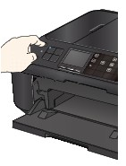
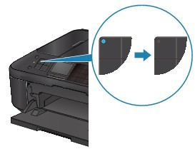
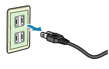

To unplug the power cord, follow the procedure below.
 Important
Important-
Confirm that all lamps on the Operation Panel are off before unplugging the power cord, then unplug the power cord. Unplugging the power cord while the machine is still on may cause drying or clogging of the Print Head and print quality may be reduced.
-
The power cannot be turned off while the machine is sending or receiving a fax, or when the received fax or the unsent fax are stored in the machine's memory. Make sure if the machine completed sending or receiving all the faxes before disconnecting the power cord.
-
The machine cannot send or receive faxes when the power is turned off.
-
If you unplug the power cord, all the faxes stored in the machine's memory are deleted.
Print necessary faxes or save them to the memory card or the USB flash drive before unplugging the power cord.
-
Press the ON button to turn the machine off.
 -
Confirm that all lamps on the Operation Panel are off.
 -
Unplug the power cord.
The specification of the power cord differs depending on the country or region of use.